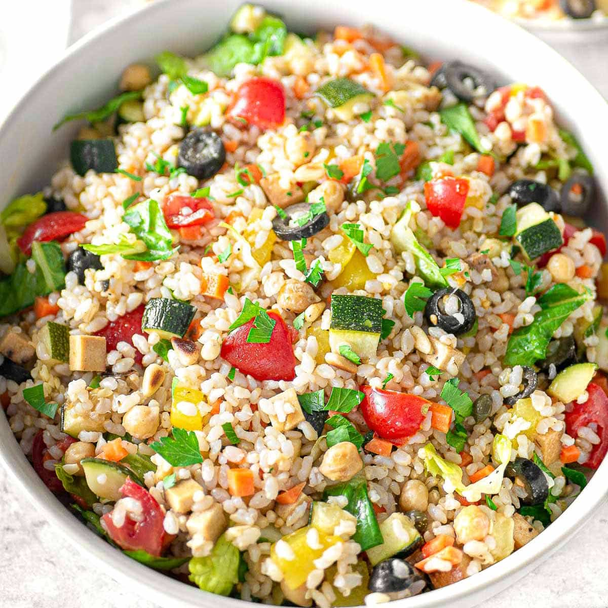

Rice Salad

Description
Rice salad is a traditional summer dish that is widely popular all around Italy. In the shoe-shaped country, however, "Insalata di Riso" is often made with non-vegan ingredients such as canned tuna, chicken, cheese, and wurst sausage.
Ingredients list
- Whole grain brown rice
- Chickpea
- Tofu
- Roasted Zucchini or eggplant
- Lettuce
- Black olives
- Cherry tomatoes
- Sweet corn or yellow pepper
- Carrots
- Capers or cucumbers
- Parsley or fresh basil
- Olive oil
- Lemon juice
Steps
- Step 1: Rice and Roasted Veggies
n a large pot with lightly salted boiling water, boil the whole grain rice for as long as described on the package minus 2 minutes. This is important as the rice will keep cooking with its residual heat.
Preheat the oven to 390˚F (200˚C). Slice the zucchini into thick slices, season them with salt and 2 teaspoons of olive oil, and roast them in the oven for about 20 minutes. At the same time, roast the whole yellow pepper in the oven for about 30 minutes. Then set it aside to cool down.Once the rice is cooked, drain it well, move it to a large oven dish and add 2 tablespoon of lemon juice immediately while mixing it in with a spoon. This will help lower the temperature of the rice and add flavor. Set aside and keep stirring occasionally to help the rice cool down faster.
- Step 2: Legumes
On a non-stick pan warm up 1 tablespoon of olive oil, then add drained chickpeas and the tofu chopped into small dice. Season with salt and pepper and sauté for two minutes. You can add some dried Italian herbs if you have them at hand. Set aside and let cool down.
- Step 3: Fresh Veggies
Slice the olives into thin slices, cut the cherry tomatoes into 4 pieces each, cut the carrot into small dice, slice the lettuce into small pieces, and rinse the capers under tap water. Add all to a large bowl and season with 1 tablespoon of lemon juice, 1 tablespoon of olive oil, and salt. Mix well.
Once the zucchini and yellow pepper are cooked and cooled, peel and remove the seeds from the pepper then slice both pepper and zucchini into small dice of roughly the same size.
- Step 4: Build The Rice Salad
1) Add the rice to the bowl with the olives, tomatoes, carrot, capers, and lettuce. Mix well with a wooden spoon. 2) Add chickpeas and tofu. Mix well with a wooden spoon. 3) Add the roasted zucchini and pepper. Mix gently from bottom to top with a wooden spoon.
Finally, let rest in the fridge for about one hour to let the flavors come together. Then take it out of the fridge and let it at room temperature for about 30 minutes before serving. Rice salad should be served cool but NOT cold.